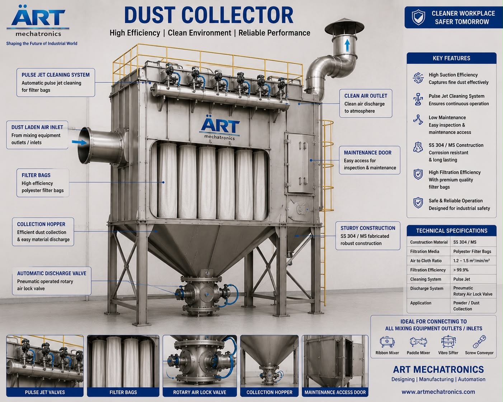

Pulse Jet Dust Collector Machine (Automatic Bag Filter Dust Collection System)
A Pulse Jet Dust Collector Machine, also known as a Pulse Jet Bag Filter or Pulse Jet Baghouse, is an advanced industrial air pollution control system designed to remove dust, fumes, and particulate matter using high-efficiency filter bags with automatic pulse cleaning technology.

About the Pulse Jet Dust Collector Machine
Unlike conventional dust collectors, pulse jet systems use compressed air bursts (pulse jets) to clean filter bags continuously without interrupting operation, making them ideal for continuous, high-load industrial environments.
Pulse jet dust collectors are widely used in industries such as cement, steel, food processing, pharmaceuticals, chemicals, packaging, and powder handling plants, where efficient dust control and minimal downtime are critical.
ART Mechatronics offers high-performance pulse jet dust collectors, engineered for maximum filtration efficiency, automatic operation, and long-term reliability.
One machine, many names
Buyers search for this equipment under many terms — we manufacture all of them:
Working Principle of Pulse Jet Dust Collector
Dust-filled air enters the collector through:
Air passes through fabric filter bags:
Compressed air pulses are released:
This dislodges accumulated dust from bags
Dust falls into:
Cleaning happens automatically without stopping airflow.
Filtered air is safely released or recirculated.
Types of Pulse Jet Dust Collectors
Industries Using Pulse Jet Dust Collectors
🏗️ Cement & Construction
- Cement plants
- Fly ash handling
🏭 Steel & Metal Industry
- Foundries
- Fabrication units
🍃 Food & Agro Industry
- Spices, flour mills
- Grain processing
💊 Pharma & Chemical Industry
- Powder handling
- Chemical processing
⚗️ Powder & Bulk Material Industry
- Packaging plants
- Conveying systems
♻️ Recycling & Plastic
- Granules and pellets
💎 FEATURES & ADVANTAGES ✔ Automatic cleaning system (no manual intervention) ✔ Continuous operation without shutdown ✔ High filtration efficiency (up to 99.9%) ✔ Suitable for fine and heavy dust ✔ Low maintenance and operating cost ✔ Energy-efficient design ✔ Long filter bag life ✔ Compliance with pollution control norms
Technical Highlights
- Airflow Capacity: Custom (CFM based)
- Filter Type: Fabric Filter Bags
- Cleaning Mechanism: Pulse Jet (Compressed Air)
- Dust Discharge: Hopper + Rotary Valve
- Construction: Mild Steel / Stainless Steel
- Automation: PLC-based control system
Turnkey Pulse Jet Dust Collection Solutions
ART Mechatronics offers:
- Complete system design & engineering
- Ducting layout and airflow calculation
- Equipment manufacturing
- Installation & commissioning
- Automation integration
- After-sales service & AMC
Why Choose Art Mechatronics
- Expertise in advanced dust collection systems
- Customized solutions for each industry
- High-efficiency and reliable systems
- Robust and durable construction
- Proven performance across industries
Applications
- Cement Plants
- Steel & Foundry Units
- Food Processing Plants
- Pharma & Chemical Units
- Packaging Plants
- Industrial Manufacturing Units
Call To Action
Looking for an Automatic Pulse Jet Dust Collector System? Connect with our experts for:
- Customized solutions
- Turnkey installation
- Pollution compliance systems
Request a Quote | Talk to Our Expert
Get pricing & specs for the Pulse Jet Dust Collector Machine
Tell us your product, capacity and process — our engineers will design a turnkey solution and send a quote. Typical reply within one business day.
One partner, from design to start-up
ART Mechatronics designs, manufactures, installs and commissions your Pulse Jet Dust Collector Machine solution in-house — India · UAE · Thailand.